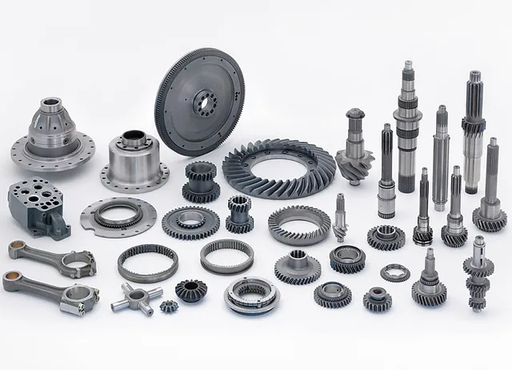

私たちＪＩＴは、日本製の食料品、飲料、酒、日用雑貨、医薬品、自動車用部品及び宝石の卸売及び販売を取り扱っております。お客様のご用命へ常に最適なご提案を差し上げ、ご要望にお応えして参ります。お客様へお届けする商品は、私たちがお客様の代わりと なって厳選しお届けしていきます。設立間もない会社ではありますが、お客様のご要望に真摯に向かい合い日々社業に勤めております。
事業内容
Business content
-
流通事業(輸出入)
アジアを主とした輸出入による、流通事業を主たる事業基盤としております。取扱い品目は多岐に渡り生鮮食品/加工食品/飲料(酒類含む)/日用雑貨品/地方ブランドなどを国内外から仕入販売を営んでおります。
-
日本製食品
食料品（生鮮食料品も含めます）、飲料、酒など日本製の食品全般を取り扱っています。故郷ブランド物もご用命頂けます。
-
日本製日用雑貨

日本で取り扱われている様々な日用雑貨をお取り次ぎ致します。希少な故郷ブランド物もご用命頂けます。
-
日本製自動車部品
海外へ輸出された中古車に欠かせない修理部品のお取り寄せを行っております。希少な部品も国内の調達ネットワークを活かしご用命を賜ります。
-
IT事業
新たな事業領域の構築を行い収益基盤の創出することを目標にＩＴ事業を展開してまいります。創業メンバーのスキルや知見、技術者交流などで「アプリ開発」「ＡＩ開発」「コンサルティング業務」等を手掛けます。
-
通販事業
流通事業の底上げを図る目的で通販事業を展開して参ります。国内外を問わずJITが調達する商品を通販サイトでお取扱い。東南アジア現地においては現地顧客向けに「日本製品」を紹介して参ります。
-
代理店事業
マーケティングの広告や販売促進のイベント企画・開催、他社の面白いサービスを導入支援など弊社が持つネットワークを活用し、お客様のニーズに沿った代理業務を請け負います。
沿革
History
- 2016.06ジャパン・インタートレーディングを設立
- 2016.08企業理念の賛同者を迎えて増資(1,000万円)
- 2019.10古物商許可証、酒類販売免許を取得。取扱品目を増やす
- 2022.03得意先向けのODM/OEM事業を開始
- 2022.11外資系小売企業と業務提携を契機に株主として迎え入る
会社概要
Company Profile
- 会社名ジャパン・インタートレーディング株式会社
- 代表者代表取締役 福井悦子
- 設立月2016年6月
- 所在地東京都日本橋室町1-2-6 日本橋大栄ビル7階
- 資本金1,000万円
- 連絡先03-9314-6410
アクセス
Access
-
電話： 03-5325-3084(代表)

-
【三越前駅】
B5出口より徒歩1分
東京メトロ半蔵門線・銀座線
【日本橋駅】
B9出口より徒歩3分
都営浅草線
【東京駅】
日本橋口より徒歩8分
JR・新幹線
【新日本橋駅】
3番出口より徒歩8分
JR総武線(快速)
東京都日本橋室町1-2-6 日本橋大栄ビル7階
最寄り：東京メトロ半蔵門線 三越前駅、銀座線 三越前駅 B5出口 徒歩2分
Copyright © 2022 JAPAN INTER TRADING CO., LTD. All Rights Reserved.